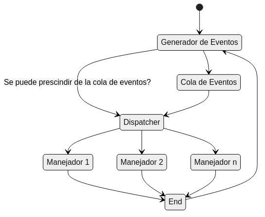

Created: 2025-03-26 mié 01:00
// SECUENCIAL | // DIRIGIDA POR EVENTOS
repetir | son_eventos (ev1, ev2, ev3...);
presentar_menu (); | ...
opc = leer_opcion (); | cuando_ocurra ( ev1, accion1 );
... | cuando_ocurra ( ev2, accion2 );
si (opc == 1) entonces accion1 (); | repetir
si (opc == 2) entonces accion2 (); | ...
... | hasta terminar
hasta terminar

Figura 1: Esquema básico de una aplicación bajo el paradigma de la PDE.
Usando un preprocesador especial que añade esta característica nueva al lenguaje. Es el caso de la biblioteca Qt. El preprocesador empleado se llama MOC y la parte de PDE que implementa es la que denomina signal/slot.
Qt emplea el término señal (signal) en lugar de evento y el de slot en lugar de callback.
1: #include <QObject>
2:
3: class Counter : public QObject {
4: Q_OBJECT
5:
6: public:
7: Counter() { m_value = 0; }
8:
9: int value() const { return m_value; }
10:
11: public slots:
12: void setValue(int value);
13:
14: signals:
15: void valueChanged(int newValue);
16:
17: private:
18: int m_value;
19: };
1: void Counter::setValue(int value) {
2: if (value != m_value) {
3: m_value = value;
4: emit valueChanged(value);
5: }
6: }
7:
8: Counter a, b;
9: QObject::connect(&a, &Counter::valueChanged,
10: &b, &Counter::setValue);
11:
12: a.setValue(12); // a.value() == 12, b.value() == 12
13: b.setValue(48); // a.value() == 12, b.value() == 48
Las alternativas basadas en el uso de bibliotecas no requieren de modificaciones al lenguaje.
1: #include <sigc++/sigc++.h>
2: class AlienDetector {
3: public:
4: AlienDetector();
5:
6: void run();
7:
8: sigc::signal<void> signal_detected;
9: };
10:
11: AlienDetector::AlienDetector() {}
12:
13: void AlienDetector::run() {
14: sleep(3); // wait for aliens
15: signal_detected.emit();
16: }
1: using namespace std;
2:
3: void warn_people() {
4: cout << "There are aliens in the carpark!" << endl;
5: }
6:
7: int main() {
8: AlienDetector mydetector;
9: mydetector.signal_detected.connect( sigc::ptr_fun(warn_people) );
10:
11: mydetector.run();
12:
13: return 0;
14: }
boost::signals2 es un dato de tipo boost::optional, este actúa
como un wrapper sobre el valor real devuelto. 1: // compilar con: g++ signals1.cc -o signals1
2: #include <iostream>
3: #include <boost/signals2.hpp>
4:
5: void my_first_slot () {
6: std::cout << "void my_first_slot()\n";
7: }
8:
9: class Car {
10: public:
11: void out_of_gas_cb () { std::cout << "Gas needed!\n"; }
12: static void class_method () { std::cout << "Class Method!\n"; }
13: };
1: int main() {
2: boost::signals2::signal<void ()> sig;
3: Car c;
4:
5: sig.connect(my_first_slot);
6:
7: /////////////////////////////////////////////////////
8: // Caso especial: //
9: // El callback o slot es un método de una clase. //
10: /////////////////////////////////////////////////////
11: sig.connect( std::bind(&Car::out_of_gas_cb, &c) );
12: sig.connect( Car::class_method );
13:
14: std::cout << "Emitting the signal...\n";
15: sig();
16: }
1: // compilar con: g++ signals2.cc -o signals2
2: #include <iostream>
3: #include <boost/signals2.hpp>
4:
5: class Car {
6: public:
7: Car (std::string b) { brand = b; }
8:
9: void out_of_gas_cb () {
10: std::cout << brand << ": Gas needed!\n";
11: }
12:
13: private:
14: std::string brand;
15: };
1: int main() {
2: boost::signals2::signal<void ()> sig;
3: Car a("audi");
4: Car s("seat");
5:
6: //auto cna = sig.connect(boost::bind(&Car::out_of_gas, &a));
7: boost::signals2::connection cna = sig.connect(std::bind (&Car::out_of_gas_cb, &a));
8: boost::signals2::connection cns = sig.connect(std::bind (&Car::out_of_gas_cb, &s));
9:
10: std::cout << "Emitting the signal...\n";
11: sig();
12:
13: cna.disconnect (); // disconnect audi signal
14:
15: std::cout << "\nDisconnect & emit the signal...\n\n";
16: sig();
17: }
1: //==============//
2: // Uso de bind: //
3: //==============//---------------------------------------------------------//
4: // int sub(int lhs, int rhs); // returns lhs - rhs //
5: // bind(sub, 3, 4); // returns a function object whose //
6: // // operator() returns sub(3, 4) //
7: // 1) bind(sub, 3, 4)(); //
8: // 2) auto functor = bind(sub, 3, 4); // define a variable for the functor //
9: // cout << functor() << '\n'; // call the functor, returning -1. //
10: //-------------------------------------------------------------------------//
1: // compilar con: g++ signals3.cc -o signals3
2: #include <iostream>
3: #include <boost/signals2.hpp>
4:
5: class Car {
6: public:
7: Car () { temp = 90; }
8:
9: void out_of_gas_cb (int dist) {
10: std::cout << "Gas needed!\nDistance to next petrol station: "
11: << dist << "km\n";
12: }
13:
14: private:
15: int temp;
16: };
1: Int main() {
2: Car c;
3:
4: boost::signals2::signal<void (void)> sig;
5: boost::signals2::signal<void (Car*, int)> sig2;
6:
7: sig.connect ( std::bind(&Car::out_of_gas_cb, &c, 20) );
8: sig2.connect ( &Car::out_of_gas_cb );
9:
10: std::cout << "Emitting the signal...\n";
11: sig();
12: sig2(&c, 12);
13: }
1: // compilar con: g++ signals4.cc -o signals4
2: #include <iostream>
3: #include <boost/signals2.hpp>
4:
5: class Car {
6: public:
7: Car () { temp = 90; }
8:
9: int out_of_gas_cb (int dist) {
10: std::cout << "Gas needed!\nDistance to next petrol station: "
11: << dist << "km\n";
12: return temp;
13: }
14:
15: private:
16: int temp;
17: };
1: int main() {
2: Car c;
3:
4: boost::signals2::signal<int (void)> sig;
5: sig.connect ( std::bind(&Car::out_of_gas_cb, &c, 20) );
6:
7: std::cout << "Emitting the signal...\n";
8: int t = *sig(); // returns a boost::optional
9:
10: std::cout << "The temp. of car's engine is " << t << "ºC.\n";
11: }
boost::signals2 ?boost::signals2.
Para ello empleamos la función signal disponible en la biblioteca
estándar de C.
1: #include <boost/signals2.hpp>
2: #include <iostream>
3: #include <cstdlib>
4: #include <csignal>
5: #include <string>
6:
7: using namespace std;
8:
9: class Hardware;
10: using HWPtr = Hardware *;
11:
12: class Hardware {
13: public:
14: Hardware(string n) {
15: if (SIG_ERR == signal(SIGFPE, fpe)) {
16: cerr << "failure to setup signal.";
17: }
18: name = n;
19: }
20:
21: // Signals //--------------------------------------------------------
22: boost::signals2::signal<void(HWPtr)> onDivisionByZero;
23:
24: string hw_name() { return name; }
25: private:
26: int data;
27: string name;
28: // Class methods //--------------------------------------------------
29: static void fpe(int n);
30: };
31:
32: Hardware gHw("Computer CPU");
33:
34: void Hardware::fpe(int n) {
35: cerr << "Low level signal caught.\nCalling high-level signal.\n\n";
36: gHw.data = n;
37: gHw.onDivisionByZero(&gHw);
38: }
39:
40: //-- Main program: Compilar con '-O' ----------------------------------
41:
42: void myFPEHandler(HWPtr h) {
43: cout << "· " << h->hw_name() << " : Division por cero.\n";
44: exit(1);
45: }
46:
47: int main(int argc, char *argv[]) {
48: gHw.onDivisionByZero.connect(myFPEHandler);
49:
50: auto n = 3;
51: int den = 0;
52:
53: cout << "Division hecha?: r= " << r << '\n';
54:
55: auto r = n / den;
56: return 0;
57: }
58:
1: // SECUENCIAL
2: void MissionControl::follow_voyagers () {
3: ulong impulses = 0;
4: while ((not v1.is_outof_ss()) or
5: (not v2.is_outof_ss())) {
6: std::cout << "[" << ++impulses
7: << "]-------Following Voyagers-------------\n";
8:
9: v1.travel ();
10: if (v1.is_outof_ss()) do_something_when_outof_ss(v1);
11:
12: v2.travel ();
13: if (v2.is_outof_ss()) do_something_when_outof_ss(v2);
14: }
15: }
1: // DIRIGIDA POR EVENTOS
2: void MissionControl::follow_voyagers () {
3: ulong impulses = 0;
4: while ((not v1.is_outof_ss()) or
5: (not v2.is_outof_ss())) {
6: std::cout << "[" << ++impulses
7: << "]---------Following Voyagers-----------\n";
8: v1.travel ();
9: v2.travel ();
10: }
11: }
C++. Aquí tienes el
primero de los vídeos dedicados al patrón Observer.